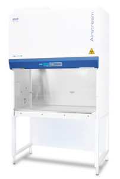

Airstream® Class II Biological Safety Cabinet (D-Series)Optimum combination of Safety, Performance and Ergonomics Esco Labculture Class II Type D series.
General
Probably The World’s Most Advanced Energy Efficient, Quiet, and Compact BioSafety Cabinet The Esco Airstream® Class II Biological Safety Cabinet is an effective solution in providing operator, product and environmental protection within laboratories and industrial facilities. With the presence of its DC ECM blower, this is the most energy efficient Class II BioSafety Cabinet in the world with 70% energy savings compared to AC motor. It also features stable and self-compensating airflow, despite building voltage fluctuations & filter loading. Its large performance envelope in an open declaration of possible safe operating airflow values. Certified EN 12469, Esco Airstream® Class II Biological Safety Cabinet also has antimicrobial coating on all its external and internal painted surfaces.
Key Benefits
- Energy Saving
- Compact
- Stable, self-compensating airflow
- Low Noise and Ergonomic Design
Features
- ULPA Filter* with 99.999% efficiency against 0.3µm particles, 99.995% filter efficiency for MPPS at 0.1µm improves safety
- SentinelTM Gold Microprocessor Controller displays all safety information on one screen
- Airflow sensor alerts the user if airflow is sufficient for greater safety
- RS 232 Serial Interface Port enables sending of operational information to Building Management System (BMS)
- ISOCIDETM powder coat inhibits microbial growth on external surface prevents contamination and improves safety
- Single-Piece Stainless Steel work top with coved construction retains spill
- Single-Piece Stainless Steel inner liner with large radiused corners facilities easy cleaning and contamination
- Side capture zones and negative pressure side walls optimize containment
- Ergonomically designed; Raised Arm Rest helps prevent grille blocking and create a comfortable working posture
- Available in 1.2m (4′), 1.8m (6′) sizes
- *according to American Standard IEST-RP-CC001, equivalent to HEPA H14 for EU-Standard EN1822
Accessories
Esco offers a variety of options and accessories to meet local applications. Contact Esco or your local Sales Representative for ordering information.
Support Stands
- Fixed hieght, available 711 mm (28″) or 864 mm (34″)
– With leveling feet
– With casters
- Telescoping height
– With leveling feet, 660 mm to 960 mm (26″ to 37.8″), 25 mm (1″) increment
– With casters, 660 mm to 880 mm (26″ to 34.6″), 25 mm (1″) increment
- Electric adjustable height, 711 mm to 864 mm (28″ to 34″)
– With leveling feet
– With casters
Electrical Outlets
- European/Worldwide Style
- Available in type C, D, E, F, G, H, I
- North American Style
Cabinet Accessories
- Germicidal UV Lamp, 253.7 nm wavelength
– With timer to optimize lamp life and specific species exposure need
- PVC Arm Rest, 712 mm (28″) size
– Provides maximum operator comfort
– Easy to clean
- Ergonomic Lab Chair, 395 to 490 mm (15.6″ to 19.3″) height
– Laboratory grade, ISO Class 5 rated
– Alcohol resistant
- Ergonomic Foot Rest
– Improves working posture
– Adjustable height with anti-skid coating and chemical resistant finish
- Stainless Steel IV Bar with Hooks
– Maximum load is 6 Kg (13 lbs.) total
| Model No. | External Dimensions (mm) without arm rest | External Dimensions (mm) with arm rest | Internal Dimensions (mm) | Airflow Velocity (Inflow) | Airflow Velocity (Downflow) | Electrical |
| AC2-4D8 | 1340 x 753 x 1400 | 1340 x 810 x 1400 | 1220 x 580 x 660 | 0.45 m/s
(90 fpm) |
0.30m/s
(60 fpm) |
230 V
50/60 HZ |
| AC2-6D8 | 1950 x 753 x 1400 | 1950 x 810 x 1400 | 1830 x 580 x 660 | 0.45 m/s
(90 fpm) |
0.30m/s
(60 fpm) |
230 V
50/60 HZ |